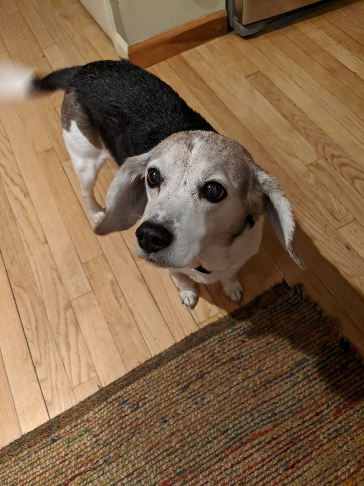

Hi I’m Harry Potter and I am a Beagle Jack Russell Terrier mix and pet of the Miller-Kodz family!
I was rescued when I was just a puppy in 2010, but no one was really sure how old I was at the time. My Humans think I am about 12 years old, so I am considered an old man now! My Humans also just decided to get a new puppy, Lola; she has been living with us for the last 8 months now, and boy does she make life tough. She is always so energetic running and jumping and barking and trying to play when really I just want to relax and sleep. Hopefully she calms down soon so I can go back to enjoying my peaceful days. I really like life with my Humans, they take very good care of me and cuddle with me all the time! Sometimes when I'm very good they let me sleep on the bed!